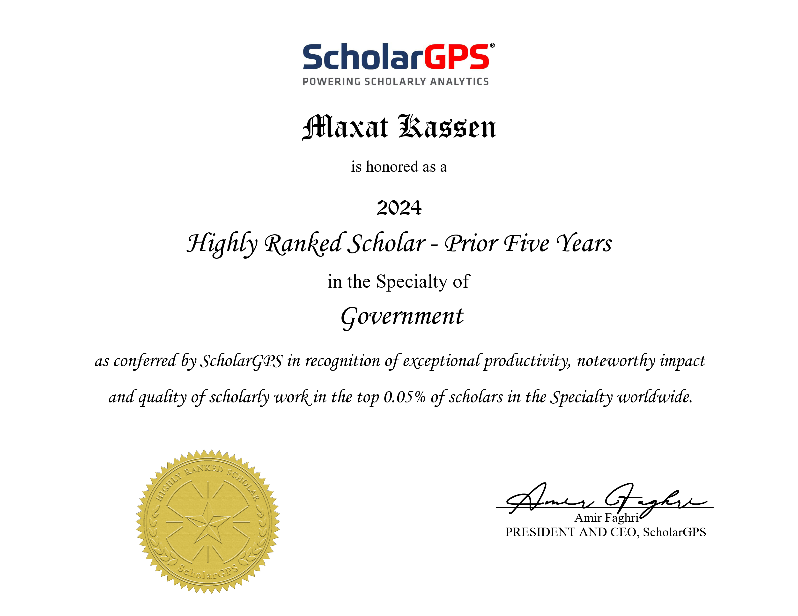

Ғылым саласындағы елеулі жетістіктері үшін ScholarGPS ұйымы тағайындайтын - «The Highly Ranked Scholar Award 2024» халықаралық ғылыми сыйлығының лауреаты (АҚШ)
Профессор Максат ҚАСЕН ScholarGPS (АҚШ) ұйымының Highly Ranked Scholars – 2024 рейтингі бойынша электрондық үкімет феноменін зерттеу саласындағы әлемдегі ең ықпалды ғалымдардың үздік 0,05 пайызының қатарына енді. Бұл – зерттеушілердің бүкіл ғылыми қызметі кезеңіндегі жетістіктері мен ғылымға қосқан үлесін бағалайтын әлемдегі ең беделді ғылыми рейтингтердің бірі.
Highly Ranked Scholars рейтингі үш негізгі көрсеткіш бойынша қалыптастырылады:
• ғылыми өнімділік (жарияланымдар саны);
• ғылыми ықпал (еңбектерге жасалған дәйексөздер саны);
• зерттеулердің сапасы (Хирш индексі – h-index).
Бағалау ScholarGPS ғылыми-талдау платформасының деректеріне негізделеді. Бұл жүйе әлемдегі ең ірі ғылыми аналитикалық платформалардың бірі болып саналады және 200 миллионнан астам ғылыми жарияланым мен 30 миллионнан астам ғалымның ғылыми профилін қамтиды. Рейтингте зерттеушінің тек қазіргі жетістіктері ғана емес, оның бүкіл ғылыми қызметі барысында ғылымға қосқан үлесі ескеріледі. Сонымен қатар, Highly Ranked Scholars рейтингіне ғылыми қызметін аяқтаған ғалымдар да енгізілетіндіктен, бұл жетістік ерекше маңызға ие.
Профессор Максат ҚАСЕНнің осы таңдаулы ғылыми рейтингке енуі оның электрондық үкімет феномені мен оған сабақтас ғылыми бағыттардағы зерттеулерінің халықаралық деңгейде кеңінен мойындалғанының тағы бір дәлелі болып табылады. Бұған дейін ғалым бірнеше беделді халықаралық ғылыми марапаттардың иегері атанған. Олардың қатарында Fulbright Scholar Award – 2012 халықаралық ғылыми сыйлығы (АҚШ Федералдық үкіметі, Вашингтон қаласы), Scopus Award – 2018 халықаралық ғылыми сыйлығы (Elsevier агенттігі, Нидерланды) және Leader of Science: Web of Science Award 2020 халықаралық ғылыми сыйлығы (Clarivate Analytics агенттігі, АҚШ) бар. Сонымен қатар, 2020 жылдан бері ол жыл сайын Стэнфорд университетінің (АҚШ) нұсқасы бойынша әлемдегі ең көп дәйексөз келтірілетін ғалымдардың үздік 2 пайызының қатарына еніп келеді.
ScholarGPS ғылыми рейтингі (АҚШ):
